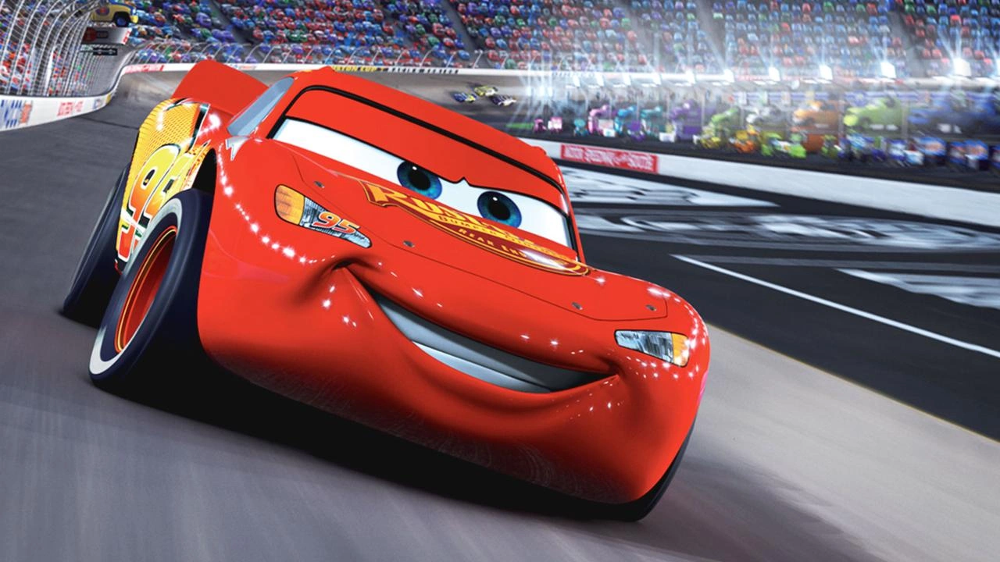
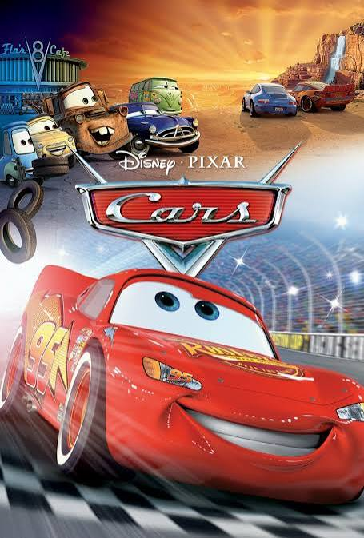
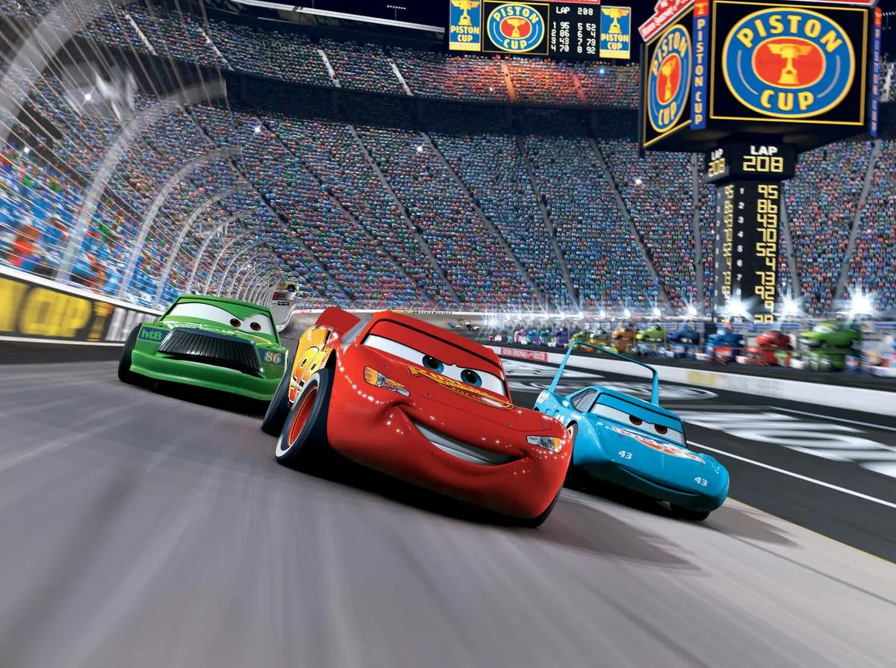
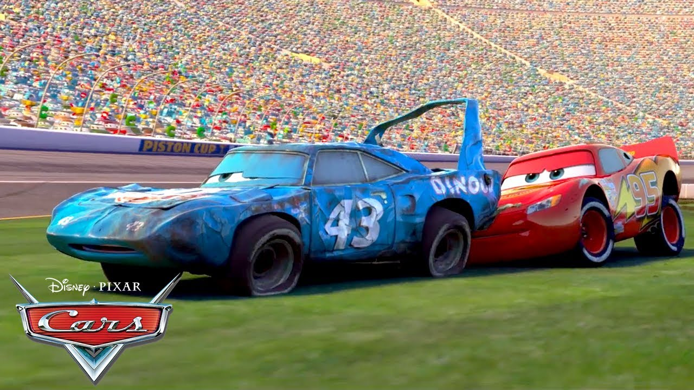
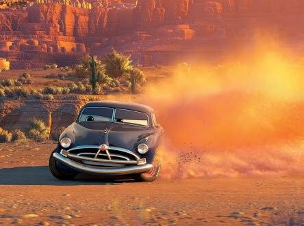
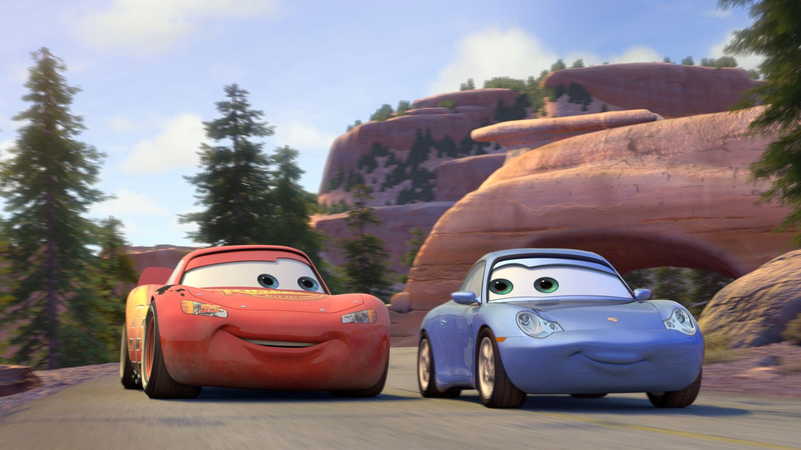
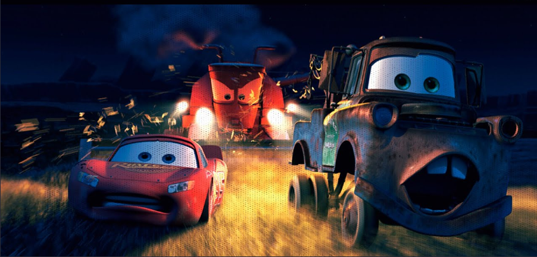
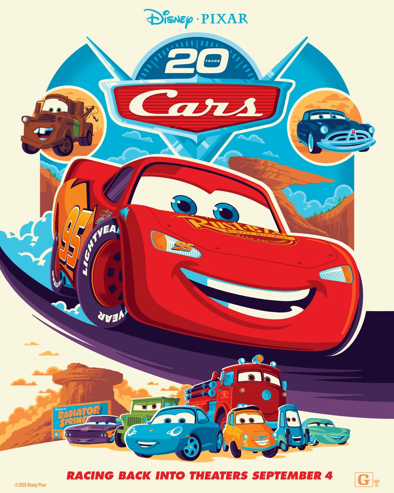

Seja muito bem-vindo à nossa página! Aperte os cintos e prepare os motores, porque Carros, o grande clássico da Pixar, está de volta! Em celebração ao seu 20º aniversário, o filme ganha um relançamento especial nos cinemas em outubro de 2026.
Neste artigo, preparamos um esquenta completo para você pegar carona nessa nostalgia: vamos relembrar a sinopse dessa jornada na Rota 66, reviver os momentos mais marcantes que emocionaram gerações e trazer todos os detalhes sobre esse grande retorno às telonas. Venha conferir com a gente!
Sinopse da Historia

Carros (2006) acompanha Relâmpago McQueen, um jovem e talentoso
carro de corrida que está determinado
a conquistar a famosa Copa Pistão.
Durante uma viagem para a Califórnia,
ele acaba se perdendo e chega à pequena cidade de Radiator Springs.
Depois de causar alguns problemas na cidade, McQueen é obrigado a
permanecer ali por um tempo.
Aos poucos, ele conhece novos amigos, como Mater, Sally e Doc Hudson,
e começa a perceber que vencer uma corrida não é a única coisa importante.
A experiência em Radiator Springs faz McQueen mudar sua maneira de enxergar a vida,
descobrindo o valor da amizade, humildade e das relações que construímos pelo caminho.
- Estudio : Pixar Animation Studios
- Diretor : John Lasseter
- Plataforma : Disney Plus
- Duração :116 minutos
- Data de lançamento : 30/06/2006
Top 5 Momentos marcantes
1- Abertura do filme

A abertura de Carros (2006) é genial porque constrói perfeitamente o tom, o protagonista e as regras daquele
universo em menos de cinco minutos. Um dos pontos altos dessa introdução é a icônica frase de efeito de
Relâmpago McQueen: “Ok, foco. Velocidade. Eu sou a velocidade”, dita na escuridão antes de
entrar na pista. Para fechar com chave de ouro, a trilha sonora traz a música "Real Gone",
que combina perfeitamente com a energia da cena e injeta a dose certa de adrenalina que o
espectador precisa para entrar no ritmo da corrida.
2- FairPlay do Relâmpago Mcqueen

O fairplay de Relâmpago McQueen no final da corrida é o ápice de sua evolução. Prestes a cruzar a linha
de chegada e vencer a Taça Pistão, ele vê pelo retrovisor o veterano O Rei destruído após uma batida covarde
de Chick Hicks.
Lembrando-se do acidente que encerrou a carreira de seu mentor, Doc Hudson, McQueen
toma a decisão histórica de frear antes da vitória, abrindo mão do título dos seus sonhos. Ele volta de marcha
ré e empurra o velho campeão para que ele termine sua última corrida com dignidade.
Chick Hicks vence sob vaias, enquanto McQueen ganha o respeito do mundo, provando que a lealdade
vale mais que qualquer troféu.
3- Curva de Areia de Doc Hudson

A cena em que McQueen espiona Doc Hudson correndo na pista de terra é um dos momentos mais reveladores
do filme. Escondido, o jovem flagra o pacato juiz acelerando fundo e executando com perfeição cirúrgica a
curva derrapada na areia.
Ao ver a poeira subir e o motor roncar, McQueen fica chocado ao perceber que o
"velho rabugento" é, na verdade, o lendário Fabuloso Hudson Hornet, tricampeão da Taça Pistão.
É nesse instante que o orgulho do protagonista cai por terra e ele passa a
enxergar Doc como um verdadeiro mestre
4- Passeio com a Sally

O passeio de McQueen e Sally pelas montanhas é o momento mais poético
e romântico do filme.
Dirigindo sem a pressão das pistas, o jovem piloto
descobre o prazer de apenas apreciar a estrada até chegarem ao antigo
Wheel Well Motel.
Lá em cima, ao som de Our Town, Sally revela o passado
vibrante da Rota 66 e como a cidade foi isolada pelo progresso da nova rodovia.
Essa pausa transforma McQueen: ele se apaixona por Sally e passa a valorizar
a história e o destino de Radiador Springs, deixando seu egoísmo para trás.
5- Fugindo do Frank

À noite, as obras param e Mate convida o McQueen para assustar tratores dormindo
no pasto buzinando forte, fazendo-os capotar como vacas.
McQueen entra na brincadeira
e dá uma acelerada barulhenta que acorda todo o rebanho. O barulho alto desperta
o Frank, uma colheitadeira gigante que age como um touro bravo, transformando
a diversão em uma fuga desesperada pelo milharal.
Sinopse da Historia

O primeiro filme da franquia Carros será relançado nos cinemas para celebrar os 20 anos de sua estreia,
ocorrida em 2006. A volta da animação às telonas representa uma oportunidade especial para os fãs que
cresceram acompanhando as aventuras de Relâmpago McQueen, Mate e os demais personagens de Radiator Springs.
Para quem assistiu ao filme durante a infância, rever Carros no cinema pode ser uma experiência marcada pela
nostalgia, trazendo de volta lembranças de uma época em que a animação fez parte da rotina de muitas crianças.
Além de proporcionar esse reencontro com uma história querida, o relançamento também permite que o
público reviva a experiência de assistir ao filme nas telonas, desta vez com uma nova perspectiva.
Ao mesmo tempo, a iniciativa apresenta a jornada de Relâmpago McQueen a uma nova geração de espectadores.
Assim, o relançamento une diferentes gerações de fãs e
mostra como uma história lançada há duas décadas ainda pode
despertar emoções e criar novas memórias.